Saturday, May 25, 2013
| I was blessed to be able to join members of my
church - Calvary Chapel
of OKC - as we went to Moore to offer help with the cleanup
process. We had a large group who met at the church. Half the
group went to help the Chavez family, beloved church members who lost
their home. The other half went to help the Clouse family, also
beloved church members. Thankfully, their home did not sustain much
damage, but we were going to assist some of their neighbors. After
that we were able to help the nephew of Assistant Pastor Chuck, Jonathan
& wife Janae - they lost everything but their lives. We helped
them were dig through
the rubble in search of some particular keepsakes before the bulldozers
move in. We were all so glad to be of the
least service to any of those touched by these recent storms.
The outpouring of kindness we saw everywhere was amazing. At
least once an hour someone would come by offering food, water, or
snacks. Every half mile someone had set up a tent offering free
hamburgers or hot dogs. At the entrances to the neighborhoods were
stations where people distributed diapers, paper towels, and all kinds of
other basic needs. There is really a huge feeling of people taking
care of each other down there. While the devastation was tragic, the
people's reactions were heartwarming. |
|
|
Here is a shot of the Chavez home. It stood long enough
for them |
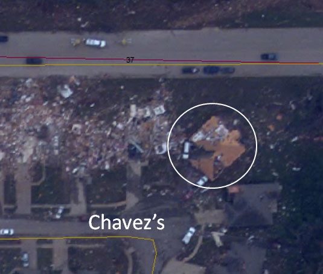 |
|
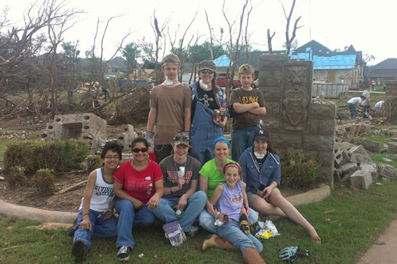 |
This was part of the other team from our church
who went over to help the Chavez family search the rubble of their home. Photo credit: Lucia Goss |
|
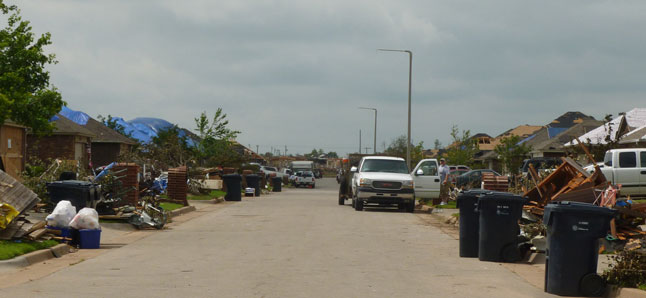 Our friends the Clouse family's home was almost untouched
except for some roof damage. |
|
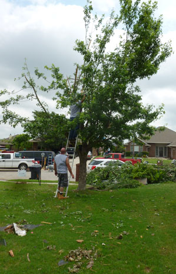 |
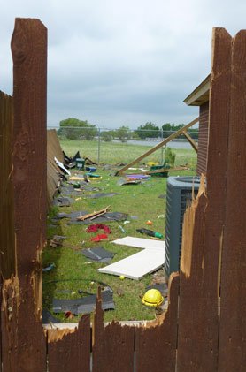 |
| We helped the neighbors on each side of the Clouse family with cleaning debris from their yards and some tree work.
|
Almost every fence looked something like this. Later that day, I found pieces of wood that had been driven a foot into the ground. At this house, I found shingles that were 3 inches into the ground. Something so soft and pliable as a shingle was turned into a dangerous projectile in those winds. |
| 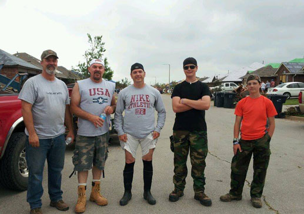 |
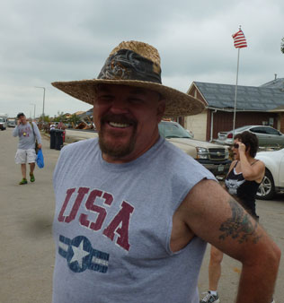 |
| Scott, J.R., Greg and his boots (with black socks), Matthew, and Josh - ready for action | J.R. really wanted to wear this hat but it kept blowing off. |
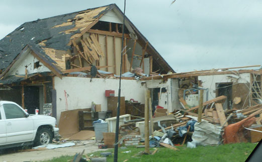 |
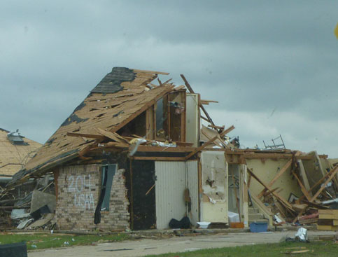 |
| Scenes from the drive to our next work site, Chuck's nephew's house | |
|
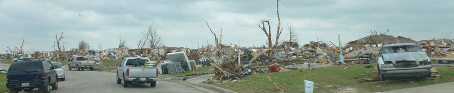 Everyone kept saying, "It looks like a war zone." |
|
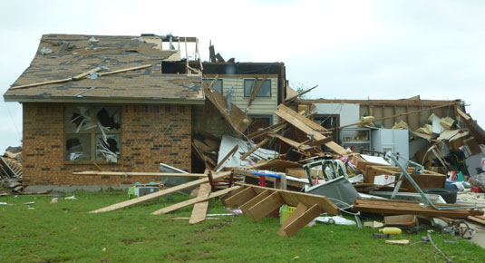 |
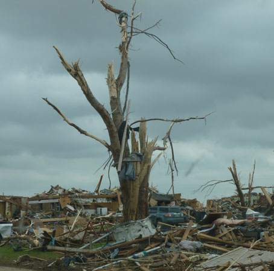 |
| There was something in almost every tree, even a mattress in one of them. | |
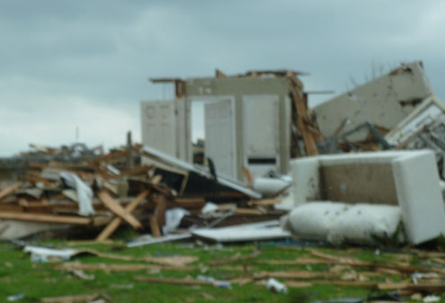 |
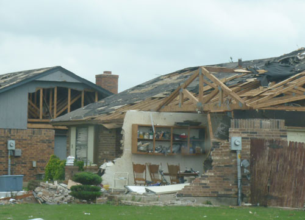 |
| I'm sorry this is blurry - I was amazed by this one tiny piece of wall that
remained standing. |
I'm sure people have put those chairs back there since the storm, but it
sure makes for a striking scene, doesn't it? |
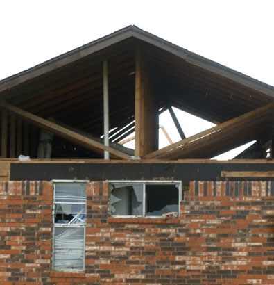 |
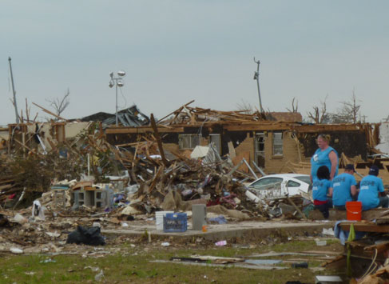 |
| Church volunteers taking a rest at a house that was taken down to the pad. | |
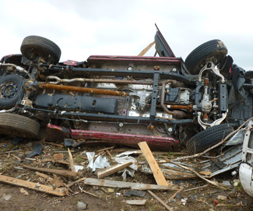 |
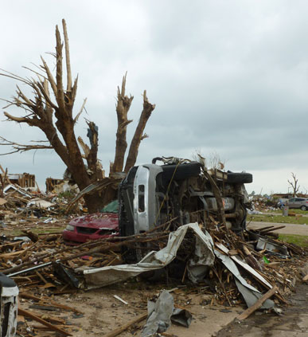 |
| This was right beside where we parked for our next project. | Across the street from Chuck's nephew's house. We were told that the family's car ended up 2 houses away. |
|
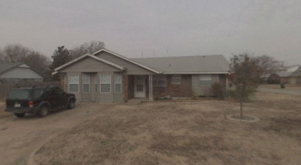 This was really striking to me. I used my phone's navigation app to get to the address. When we arrived my phone said, "You have arrived at your destination" and displayed this picture. Below is what we actually saw out the car window instead. |
|
|
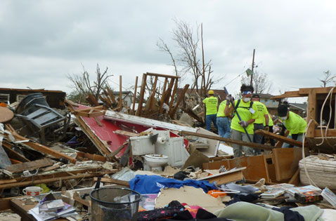 |
|
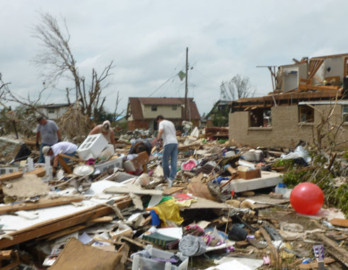 |
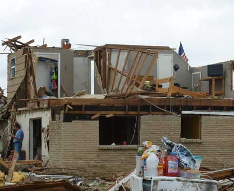 |
| Another church group was helping search the rubble when we got
there. Later they had to leave so we continued sorting through the mess. We were hoping to find three particular family items, but we only found one of the three. It was so strange what survived. For instance, this big red exercise
ball in the photo |
This house was next door. I don't think anyone would have gone
upstairs so it was amazing to see the clothing hanging in the closet and the
flat-screen TV still sitting on the table.
|
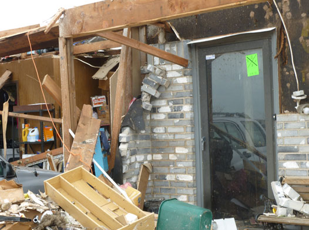 |
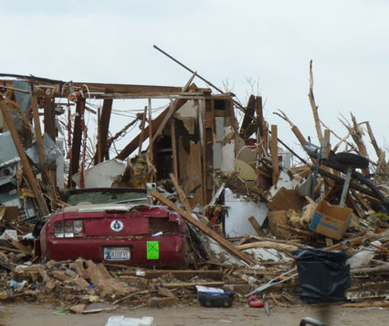 |
| This house was next door in the other direction. The walls and roof
are blown apart but the glass storm door didn't have a scratch on it. |
There is a boat trailer on its side toward the right side of this picture.
It made me wonder if the boat started out on that trailer and ended up somewhere far away! |
|
The decoder for the FEMA X Code that you see on everything in these pictures. It is very sobering. 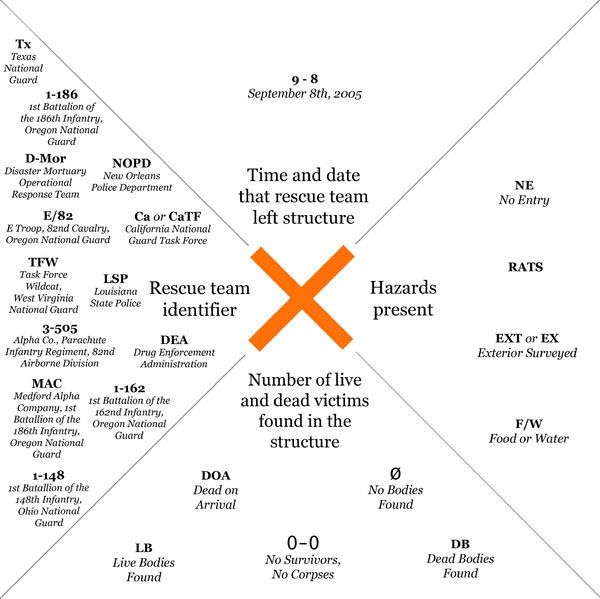
|
|
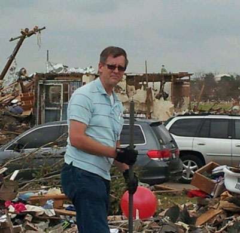 |
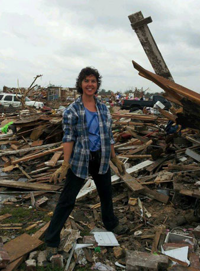 |
| Assistant Pastor Chuck, uncle to the family who used to live here. Photo by Tonya.
|
Tonya also took this picture of me, it was very nice of her.
I'm wearing my "Live
Like Luc" bracelet here but you can't see |
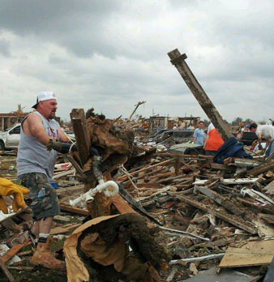 |
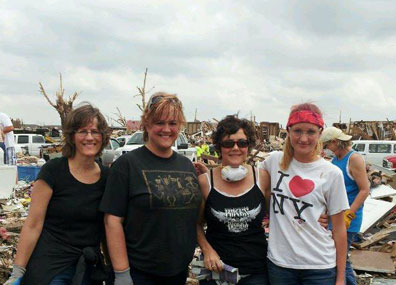 |
| J.R. worked like a machine, he went full-on all the time. Photo by Tonya. |
These lovely ladies with Tonya were visiting their son (who attends our church.) They were on a vacation from New Mexico but used the time to volunteer instead. Awesome. |
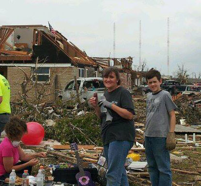 |
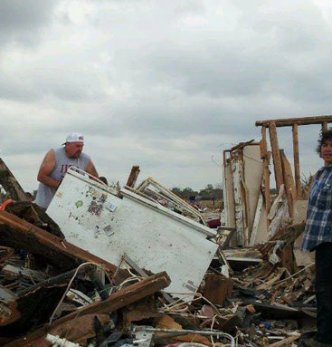 |
| The lady in pink was the homeowner, Janae. Standing are church friends Lori & one of her sons Josh. Photo by Tonya. |
J.R. wouldn't take any help with flipping this (completely full) refrigerator. Hope he didn't hurt his back! Photo by Tonya. |
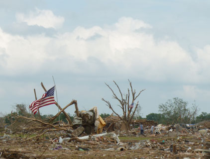 |
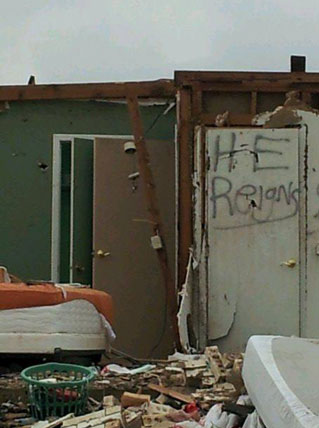 |
| This was just about a block from where we were working. Unbroken
spirit! Photo by Tonya. |
Unshaken faith!
Photo by Tonya. |
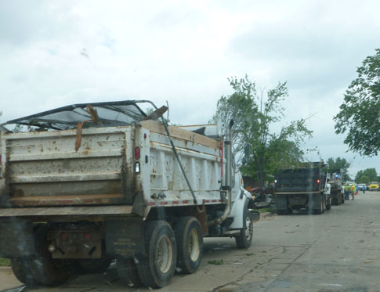 |
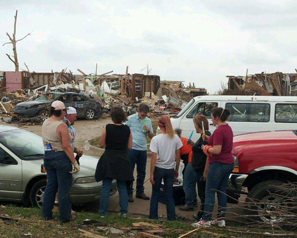 |
| These guys were heroes - the trucks were running nonstop. They could
run 24/7 for weeks and never catch up. Where are they going to take all of this trash?!
|
At the end of our workday we enjoyed a Popsicle provided by a sweet lady who
was walking all over the neighborhood with a pull-behind ice chest. They
hit the spot!
We thought it was funny that we all struggled with what to do with our trash. For blocks in every direction, everything we could see was trash - yet none of us could make ourselves throw our Popsicle wrappers on the ground. There's logic, and then there's doing like your Momma always told you - don't litter! |
|
Thank you Calvary Chapel for allowing me this opportunity. |
|